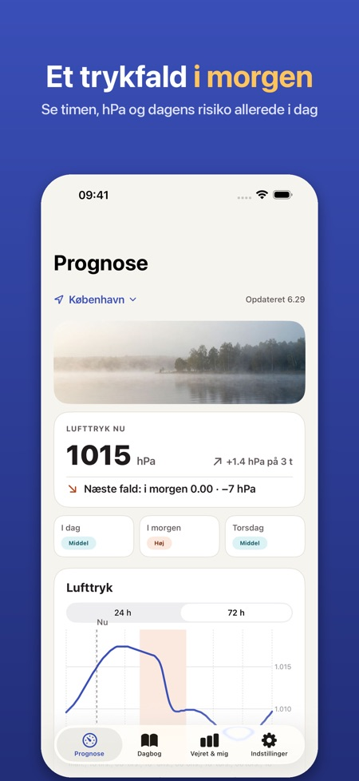
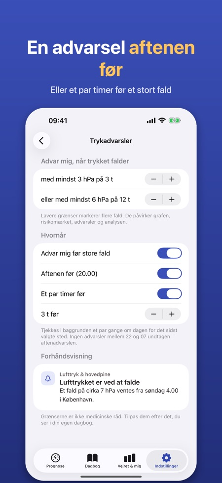
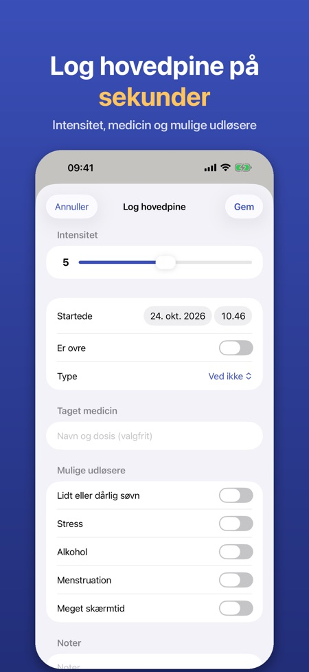

Trykprognose og dagbog. Efterårets storme giver hurtige trykfald. Se dem komme time for time, få en advarsel aftenen før, og log hovedpine med ét tryk.



Mange oplever hovedpine eller migræne, når lufttrykket falder hurtigt. Appen viser lufttrykket time for time, markerer de store fald og hjælper dig med at se, om vejret hænger sammen med din hovedpine.
LUFTTRYK TIME FOR TIME
• Graf over lufttrykket de næste 24 timer (72 timer med Pro) for din placering eller en by, du vælger
• Faldzoner markeres: mindst 3 hPa på 3 timer eller 6 hPa på 12 timer – grænserne kan ændres
• Et enkelt risikomærke pr. dag (lav, middel, høj), der kun bygger på trykændringen og forklares i appen
• Luftfugtighed og temperaturændring vises også
ADVARSEL I FORVEJEN (PRO)
• Notifikation aftenen før eller et par timer før et stort trykfald
• Appen tjekker prognosen i baggrunden for det sidst valgte sted
HOVEDPINEDAGBOG
• Log med ét tryk, også direkte fra en advarsel: intensitet 0–10, start og slut, type, medicin og om den hjalp, noter
• Mulige udløsere: søvn, stress, alkohol, menstruation, skærmtid
• Månedskalender med trykfaldsdage, detaljer for hver registrering med trykket omkring starten og en oversigt over de udløsere, du har logget
PÅVIRKER VEJRET MIG? (PRO)
• Efter 30 dages dagbog sammenlignes dine hovedpinedage med dagens trykfald: enkle tal og grafer, ingen medicinsk konklusion
• Lægerapport: en PDF for de seneste 30 eller 90 dage eller en egen periode
WIDGET (PRO)
• Lufttrykket nu, tendensen og næste store fald på hjemmeskærmen eller låseskærmen
PRO
Årsabonnement eller ét engangskøb for altid. Uden Pro beholder du 24-timers grafen og dagbogen. Ingen konto og ingen reklamer.
PRIVATLIV
Dagbogen bliver på din iPhone. Kun anonym brugsstatistik, som du kan slå fra. Vejrdata kommer fra Apple Vejr.
Appen er ikke medicinsk udstyr og giver ingen medicinsk rådgivning eller diagnoser. Hvis din hovedpine ændrer sig eller er svær, så kontakt en læge.